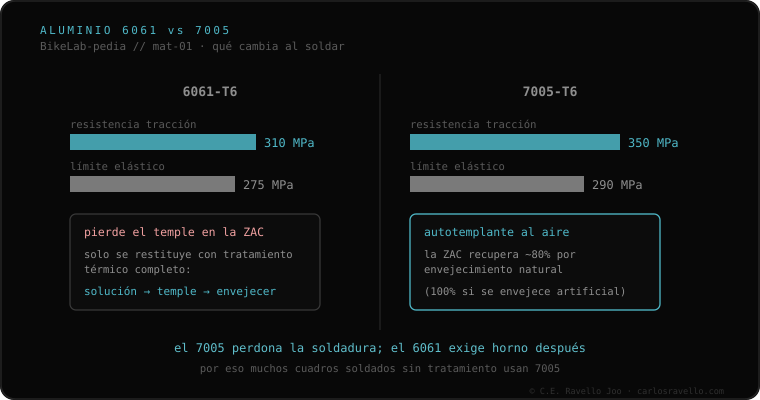

Soldadura de cuadros de bicicleta, por material
Una nota antes de empezar. Este documento es una síntesis: compila, ordena y traduce fuentes ya publicadas —normas de aleaciones, guías de soldadura y la práctica documentada de constructores de cuadros— para que un ciclista entienda qué ocurre cuando se suelda su cuadro. No es investigación metalúrgica primaria: no mide nada en laboratorio. Donde una fuente no documenta algo, se dice en vez de rellenarlo. La decisión de reparar un cuadro, o de volver a rodarlo, no es objeto de este texto: corresponde al ciclista y a su profesional.
RESPUESTA DIRECTA
Cada material de cuadro responde distinto al calor de la soldadura. El aluminio 6061 pierde su temple en la zona afectada por el calor y exige tratamiento térmico completo en horno; el 7005 es autotemplante al aire y recupera ~80% solo. El acero cromoly es el más versátil (TIG, fillet brazing o lug). El titanio exige purga de argón interior y exterior. El carbono no se suelda: se repara por relaminado en un taller de composites. La pregunta útil no es "¿se suelda?" sino "¿qué material es, y qué le hace el calor?" —y, antes de eso, confirmar que la marca es una grieta real y no la pintura—.

MÓDULO_01 // ANTES_DE_SOLDAR: ¿FISURA_REAL_O_PINTURA?
La primera decisión no es soldar, sino verificar. En las comunidades técnicas la consulta inicial recurrente no es "¿cómo lo arreglo?" sino "¿esto es una grieta o es la pintura?" [15]. Distinguirlo importa porque ambos errores se pagan: tratar como estructural un rayón cosmético, o rodar meses sobre una fisura real creyéndola pintura.
El método estándar de ensayo no destructivo para esto es la inspección por líquidos penetrantes (dye penetrant testing, PT): se limpia y desengrasa la zona, se aplica un penetrante coloreado o fluorescente, se retira el sobrante y se aplica un revelador que extrae por capilaridad el líquido retenido dentro de la discontinuidad, dibujándola con nitidez [16]. Es una de las técnicas de inspección más accesibles —existen kits de aerosol de bajo costo— y se usa de forma rutinaria en mantenimiento aeronáutico y de bastidores. Señales de que una marca es estructural y no cosmética: se concentra cerca de uniones (tubo de dirección, caja de pedalier, punteras, cordones de fábrica), reaparece tras limpiar y desengrasar, y a menudo "sangra" una línea de óxido o residuo desde el interior. Confirmar la fisura no dice nada sobre la seguridad de rodar; solo separa el susto de pintura del daño real.
MÓDULO_02 // LA_ZONA_AFECTADA_POR_EL_CALOR
Cuando se suelda un tubo, el metal no cambia solo en el cordón. Alrededor hay una franja —la zona afectada por el calor (ZAC; en inglés HAZ)— donde el material llegó a temperatura suficiente para alterar sus propiedades sin llegar a fundirse. En esa franja es donde casi siempre se juega el comportamiento de una unión. Cuánto se debilita la ZAC, y si se recupera o no, depende del material. Ese es el punto del que cuelga todo lo demás: explica por qué un cuadro a veces falla a milímetros del cordón y no en él.
MÓDULO_03 // ALUMINIO: ¿6061_O_7005?
Los cuadros de aluminio se hacen, mayoritariamente, en dos aleaciones, y se comportan de forma distinta al soldar. El 6061-T6 gana sus propiedades con un tratamiento térmico (el temple "T6"). Soldarlo destruye ese temple en la ZAC, y restituirlo exige un tratamiento térmico completo del cuadro: solubilizado a alta temperatura, temple por enfriamiento rápido y envejecido. No es algo que se haga "de paso" con el soplete; requiere horno [1][2]. El 7005-T6 es autotemplante al aire: tras soldar, la ZAC recupera de forma natural, con el tiempo, hasta cerca del 80% de la resistencia del metal base, y puede llegar al 100% si se envejece artificialmente [1][3].
| Aleación | Tracción (MPa) | Límite elástico (MPa) | Tras soldar |
|---|---|---|---|
| 6061-T6 | ≈310 | ≈275 | pierde temple en la ZAC · exige horno (T6 completo) |
| 7005-T6 | ≈350 | ≈290 | autotemplante al aire · recupera ~80% solo |
La diferencia de cifras entre ambas, conviene decirlo, rara vez es la que decide el comportamiento de un cuadro en uso: las cargas habituales quedan lejos de esos límites [1]. Lo que cambia de verdad, para quien va a soldar, es el proceso: el 6061 pide horno después; el 7005 se recupera solo. De ahí que la pregunta útil no sea "¿se suelda?" sino "¿qué aleación es?".

MÓDULO_04 // EL_MATERIAL_DE_APORTE: 4043_VS_5356
Para soldar aluminio se usa uno de dos aportes, y la elección no es trivial. El 4043 está pensado para las aleaciones de la serie 6xxx; funde a menor temperatura, fluye y "moja" mejor, es menos propenso a la fisuración con el 6061 y deja un cordón más oscuro, pero no anodiza bien. El 5356 es más resistente, deja un cordón más claro y brillante, y anodiza correctamente; es el alambre más usado en MIG. Una regla práctica de taller resume la diferencia de resistencia: hacen falta unas tres pasadas de 4043 para igualar al corte una sola de 5356 [4][5].
| Aporte | Pensado para | Cordón / acabado | Resistencia |
|---|---|---|---|
| 4043 | serie 6xxx (6061) | más oscuro · no anodiza bien | menor (≈3 pasadas = 1 de 5356) |
| 5356 | uso general · MIG | más claro · anodiza correctamente | mayor |
MÓDULO_05 // ACERO_CROMOLY_4130: TRES_FORMAS_DE_UNIR
El acero es el material más versátil de unir, y existen tres caminos documentados. El TIG funde los propios tubos para fusionarlos (en acero, por encima de unos 1450 °C). El fillet brazing los une con un aporte de bronce o plata que funde a menor temperatura, sin fundir el tubo: altera menos la estructura, deja una transición lisa, pesa algo más y es más lento y costoso. El lugged usa un manguito (lug) en la unión, con el aporte entrando por capilaridad. En la práctica, cerca del 99% de los cuadros de acero fabricados desde ~1992 son TIG; el lug y el fillet quedan para la gama alta y artesanal [6][7]. Una advertencia documentada: que el acero sea el más amable no significa que cualquier taller sirva; en tubería fina de marca o en uniones con lug, el exceso de calor de quien suelda estructuras pesadas quema la pared delgada o derrite el bronce contiguo.
MÓDULO_06 // TITANIO_Ti-3Al-2.5V: EL_DETALLE_DE_LA_PURGA
El titanio de cuadros (grado 9, con 3% de aluminio y 2,5% de vanadio) se suelda con TIG, pero con una exigencia que lo separa de los demás: hay que purgar con argón el interior y el exterior del tubo durante la soldadura. El titanio caliente absorbe oxígeno con avidez, y ese oxígeno fragiliza el cordón. Hay una señal visual directa: un cordón bien protegido queda color pajizo o plateado; si aparece azulado, gris o blanquecino, hubo contaminación por falta de gas inerte [8][9]. Esto explica por qué el titanio no se trabaja en cualquier taller: requiere el equipo de purga y la mano para lograrlo.
MÓDULO_07 // CARBONO_CFRP: NO_SE_SUELDA
La fibra de carbono no entra en este marco, y conviene decirlo claro: es un material termoestable, no se funde para volver a unirlo como un metal. Lo que existe es una reparación distinta, por relaminado, que hace un taller especializado en composites, no un soldador: se rebaja la zona dañada en forma de cono (scarf), se aplican capas nuevas de fibra (prepreg o laminado húmedo) y se cura con calor y vacío (del orden de 120 °C para prepreg). La literatura de reparación de composites reporta recuperaciones de entre el 70% y el 100% de la resistencia de diseño con un scarf bien hecho [10][11]. El diagnóstico previo de un daño en carbono se trata aparte, en daño estructural en carbono.
MÓDULO_08 // LA_DISTORSIÓN_TÉRMICA
Hay un efecto que rara vez se nombra y que compromete reparaciones aun con un cordón impecable: la contracción por enfriamiento. Al solidificar, el metal del cordón se contrae y arrastra los tubos unidos, induciendo desalineación angular y lineal en la junta [17]. En un cuadro, milímetros de desviación en una vaina se traducen en rueda descentrada, disco que roza de forma permanente o transmisión que no afina. Por eso la construcción y reparación seria de cuadros se hace sobre plantillas y banco de alineación (frame jig), que fijan la geometría durante el ciclo térmico y permiten verificar y corregir después [18]. Es una de las razones técnicas por las que soldar un cuadro no equivale a soldar una estructura cualquiera, y por las que el coste real incluye un paso —la alineación— que el presupuesto "de ganga" suele omitir.
MÓDULO_09 // CÓMO_EVALUAR_AL_SOLDADOR
La evidencia de las comunidades de ciclismo es consistente en los tres idiomas: el mayor vacío de información no es la metalurgia, sino cómo saber si quien va a soldar entiende de cuadros [19]. La respuesta habitual ("búscate un buen soldador de TIG") no da ningún criterio operativo. A partir de la práctica documentada de constructores pueden formularse cuatro verificaciones, no como certificación sino como filtro:
- 1 · Técnica. Que distinga TIG de brazing y justifique cuál corresponde al material —fusión del tubo frente a unión por aporte sin fundirlo— [6][8].
- 2 · Aporte. Para aluminio, 4043 o 5356 según el caso; mencionar la diferencia es indicador de criterio. El recurso a varillas genéricas de bajo punto de fusión para una unión estructural es una señal de alarma [4][5].
- 3 · Purga. Imprescindible en titanio; su ausencia produce la fragilización del cordón [8][9].
- 4 · Tratamiento térmico. Para 6061, su omisión deja la ZAC sin restituir; negar su necesidad delata desconocimiento del material [1][2].
Conviene añadir una contraseñal: la promesa de que el cuadro quedará "como nuevo" correlaciona, en la experiencia de los constructores, con menor competencia, no mayor —quien conoce el material explica límites, no perfección—. Y la estética del cordón ("pila de monedas") no informa sobre penetración de raíz ni sobre contaminación [8]. La versión de bolsillo de este filtro está en la ficha qué preguntarle al soldador.

MÓDULO_10 // FATIGA: EL_MATIZ_QUE_IMPORTA_MÁS_QUE_EL_MATERIAL
Hay una propiedad que suele citarse a medias. El acero y el titanio tienen límite de fatiga: por debajo de cierto nivel de esfuerzo, los ciclos no acumulan daño. El aluminio y el carbono no lo tienen: en teoría, cada ciclo, por pequeño que sea, acerca al material a la falla [12][13]. Pero ese dato, solo, induce a error. En ensayos de fatiga reales de cuadros completos (el banco EFBe es la referencia), cuadros de aluminio y carbono de calidad superaron a varios de acero de buena factura [14]. ¿Por qué? Porque cuando se diseña con un material sin límite de fatiga, se sobredimensiona para compensar. La lección documentada es que, en un cuadro terminado, el diseño y la ejecución pesan más que la etiqueta del material. El detalle del mecanismo está en fatiga del metal en la bicicleta y en estrés mecánico.
CONCLUSIÓN // CÓMO_USAR_TODO_ESTO
Nada de lo anterior dice si un cuadro debe repararse: eso es del ciclista y de su profesional. Lo que da es el idioma para esa conversación. Si el cuadro es de aluminio, se sabrá por qué preguntar la aleación, el aporte y el tratamiento térmico. Si es de titanio, por qué preguntar por la purga de argón. Si es de carbono, por qué buscar un taller de composites y no a un soldador. Y si es de acero, que se tiene el material más agradecido de los cuatro —sin que eso signifique que cualquier mano sirve—.
La versión en lenguaje llano de todo esto, pensada para quien acaba de romper su cuadro, está en la guía "Se te rompió el cuadro: qué hacer y qué decir antes de soldarlo". Las fichas individuales de cada material y técnica están en el clúster El cuadro y la soldadura de la BikeLab-pedia.
[ CLUSTER_DATA_LINKS ] // EL CUADRO Y LA SOLDADURA
Fichas técnicas de este informe:
PREGUNTAS_FRECUENTES
¿Se puede soldar un cuadro de aluminio?
Físicamente sí, con TIG. Lo que cambia según la aleación es qué pasa después: el 6061 pierde su temple en la ZAC y restituirlo exige horno; el 7005 es autotemplante y recupera ~80% solo. La pregunta técnica no es "¿se suelda?" sino "¿qué aleación es?". La decisión de reparar y rodar es del ciclista y su profesional.
¿Cómo sé si lo que tengo es una grieta o solo la pintura?
El método estándar es la inspección por líquidos penetrantes. Señales de fisura real: se concentra cerca de uniones, reaparece tras limpiar y desengrasar, y a menudo sangra una línea de óxido desde el interior.
¿Cómo sé si el soldador sabe de cuadros de bicicleta?
Cuatro verificaciones como filtro: que distinga TIG de brazing según material; aporte coherente (4043/5356); purga de argón en titanio; tratamiento térmico posterior en 6061. La promesa de "como nuevo" correlaciona con menor competencia.
¿El carbono se puede soldar?
No. Es termoestable: no se funde para reunirlo. Se repara por relaminado (scarf) en un taller de composites, con recuperaciones documentadas del 70 al 100% de la resistencia de diseño.
¿Por qué el cuadro se rompió al lado de la soldadura y no donde estaba?
Por la zona afectada por el calor (ZAC): la franja alrededor del cordón donde el material alteró sus propiedades sin fundirse. En 6061 queda blanda si no se trata térmicamente, y es ahí donde suele aparecer la nueva falla.